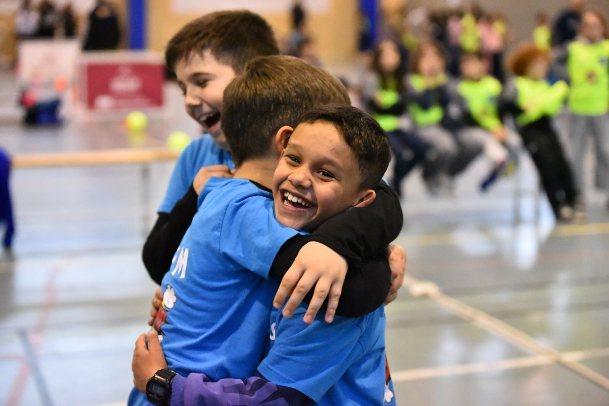
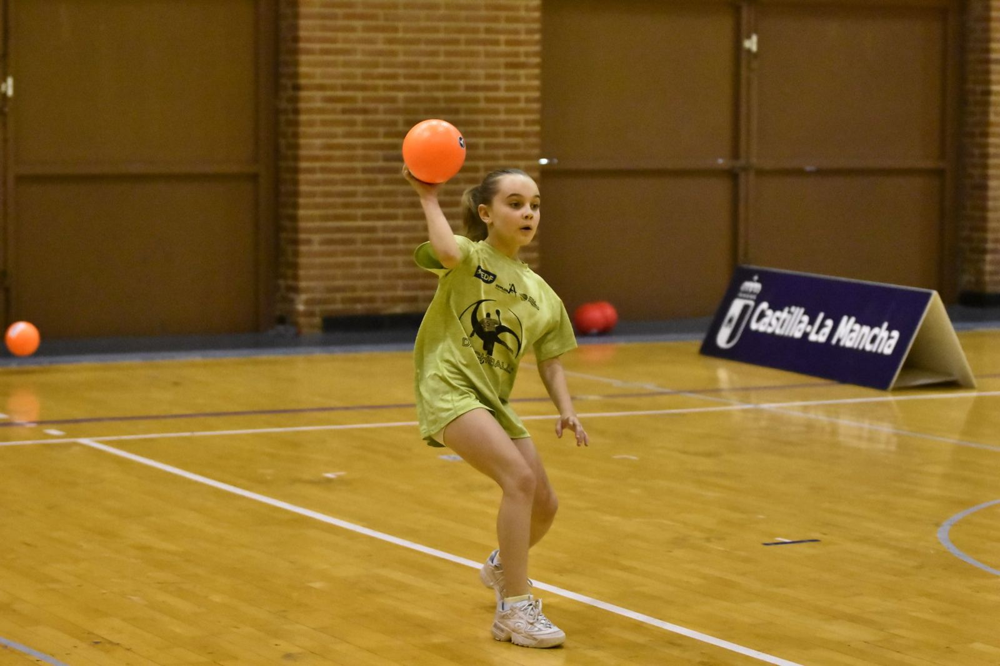
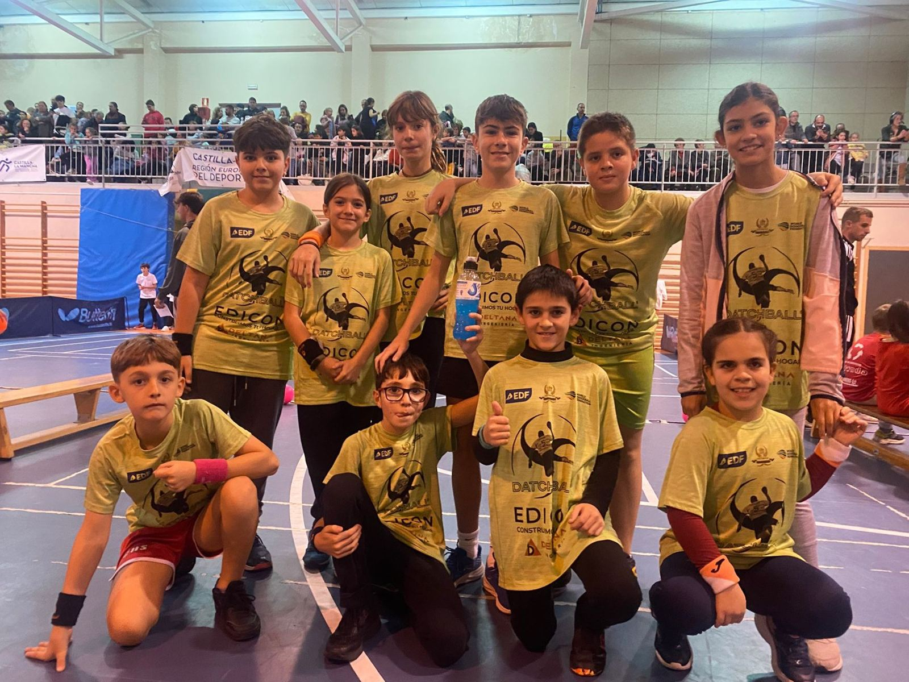
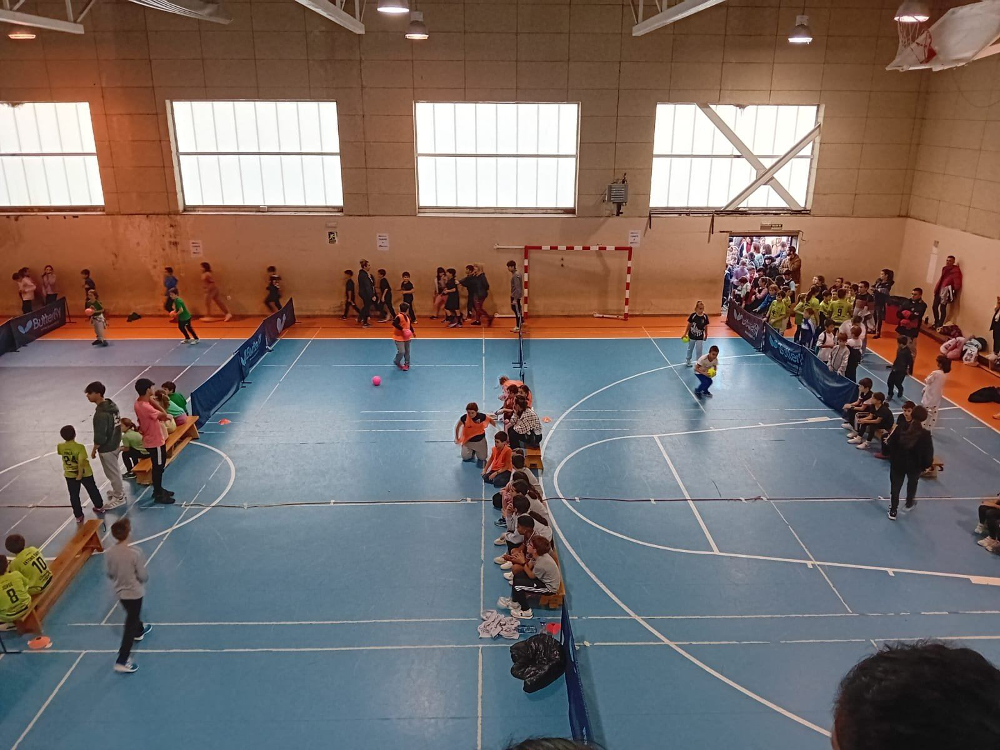
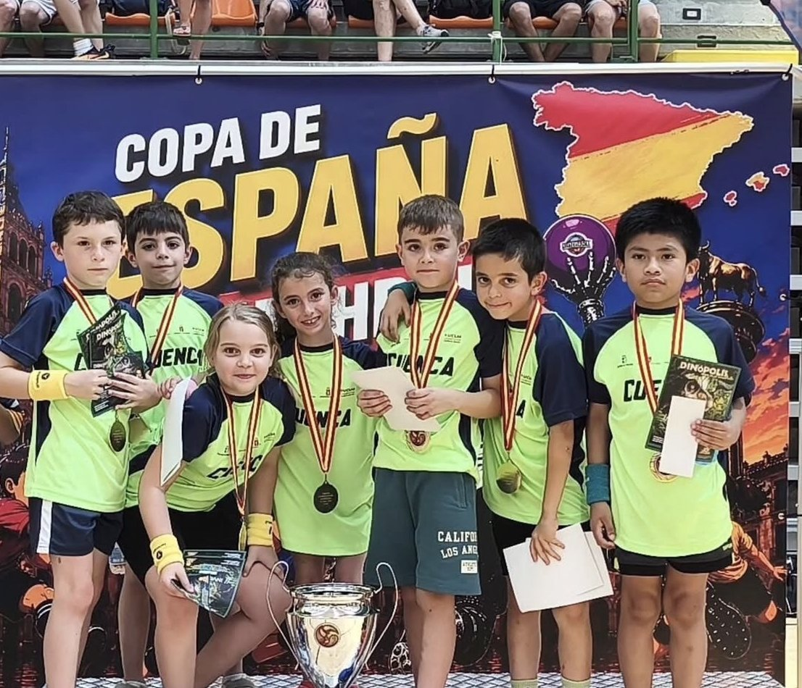

Juega. Comparte. Respeta.
Somos el club de datchball de Cuenca: extraescolares en colegios de la ciudad y la Liga Escolar de Datchball, siempre con equipos mixtos.

Un deporte para todas y todos
El datchball es un deporte de equipo nacido en un colegio: lo crearon el maestro de Educación Física Roberto Navarro Arbués y sus alumnos de 5.º de Primaria en Brea de Aragón (Zaragoza). Los equipos son siempre mixtos, se lanza, se esquiva y se atrapa, y cada jugador cuenta.
- Mixto de verdad. Chicas y chicos juegan juntos en el mismo equipo y en la misma pista.
- Valores que puntúan. Hasta 7 puntos por partido: 3 por el resultado, 2 por el comportamiento del equipo y 2 por la grada.
- Para cualquier nivel. Desde prebenjamín hasta secundaria, empieces cuando empieces.

La liga escolar en cifras
Organizamos la Liga Escolar de Datchball de Cuenca, dentro del programa Somos Deporte 3-18.
Tres formas de vivir el datchball

Extraescolares
Entrenamos en varios colegios de Cuenca, con monitores del club. Aprender, divertirse y hacer equipo.
Ver colegios →
Liga Escolar
Concentraciones con partidos en 5 pistas a la vez en el pabellón del CEIP Ciudad Encantada.
Ir a la liga →
Torneos y encuentros
Participamos en encuentros regionales de Somos Deporte y en torneos de datchball por toda España.
Conoce el club →Campeones de España prebenjamín
Los Tigres (CEIP La Paz) son los actuales campeones de la Copa de España prebenjamín. Un éxito que se suma a varios títulos regionales y a otros pódiums nacionales del club.

Síguenos en Instagram
Fotos, vídeos, resultados y novedades del club y de la liga en @datchballcuenca.
¡La inscripción sigue abierta!
Primaria y secundaria. Llámanos al 666 730 732 o al 626 678 639.